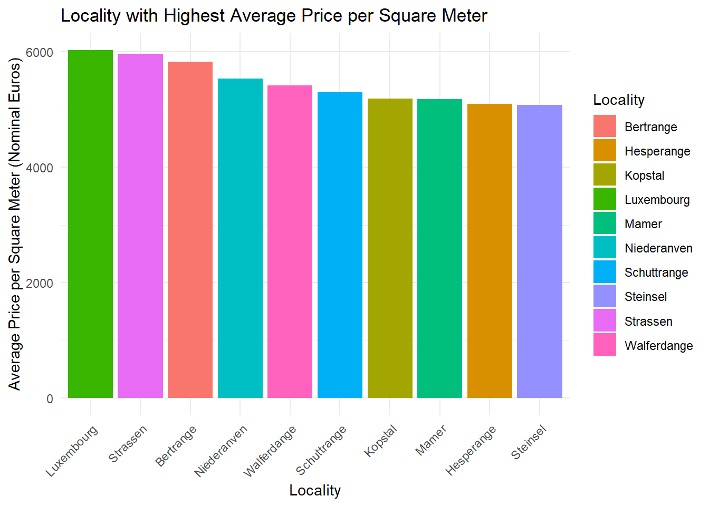
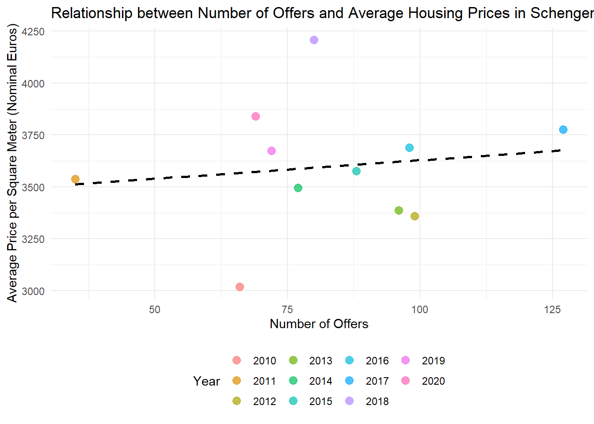
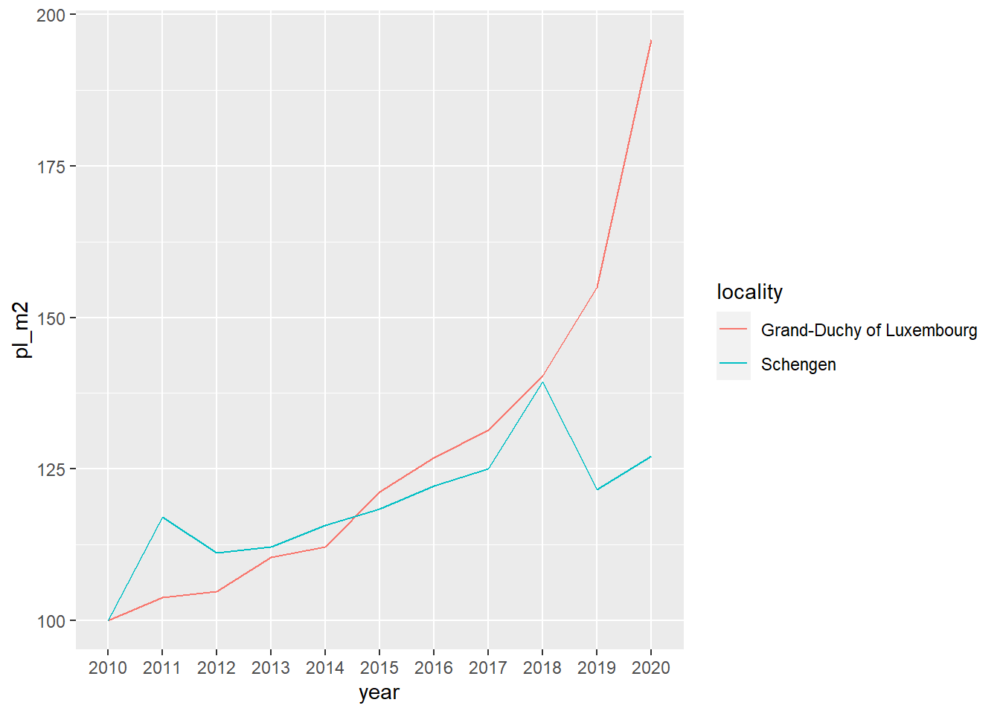
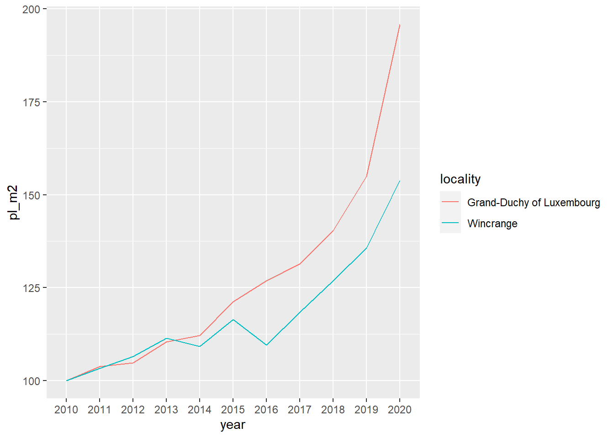

library(dplyr)
library(purrr)
library(readxl)
library(stringr)
library(janitor)
library(dplyr)
library(ggplot2)
library(purrr)
library(tidyr)STAT570 Homework
Running Code
Firstly, required packages are uploaded.
Data is downloaded from the internet in the format of .xlsx. The first 10 rows are skipped. A new column whose name is “year” is added. Then, some of variable names were changed. Lastly, year, locality, n_offers variables are selected from the data set. Also, variables whose name started with “average” are selected.
# The url below points to an Excel file
# hosted on the book’s github repository
url <- "https://is.gd/1vvBAc"
raw_data <- tempfile(fileext = ".xlsx")
download.file(url, raw_data,
method = "auto",
mode = "wb")
sheets <- excel_sheets(raw_data)
read_clean <- function(..., sheet){
read_excel(..., sheet = sheet) |>
mutate(year = sheet)
}
raw_data <- map(
sheets,
~read_clean(raw_data,
skip = 10,
sheet = .)
) |>
bind_rows() |>
clean_names()
raw_data <- raw_data |>
rename(
locality = commune,
n_offers = nombre_doffres,
average_price_nominal_euros = prix_moyen_annonce_en_courant,
average_price_m2_nominal_euros = prix_moyen_annonce_au_m2_en_courant,
average_price_m2_nominal_euros = prix_moyen_annonce_au_m2_en_courant
) |>
mutate(locality = str_trim(locality)) |>
select(year, locality, n_offers, starts_with("average"))The data is printed. We have a data set which contains 5 variable with 1343 observation in the format of tibble. However, there is a problem. When we look at some variables such as year and average price, the class of the variables are character. It should be numeric.
raw_data# A tibble: 1,343 × 5
year locality n_offers average_price_nominal_euros average_price_m2_nom…¹
<chr> <chr> <dbl> <chr> <chr>
1 2010 Bascharage 192 593698.31000000006 3603.57
2 2010 Beaufort 266 461160.29 2902.76
3 2010 Bech 65 621760.22 3280.51
4 2010 Beckerich 176 444498.68 2867.88
5 2010 Berdorf 111 504040.85 3055.99
6 2010 Bertrange 264 795338.87 4266.46
7 2010 Bettembourg 304 555628.29 3343.22
8 2010 Bettendorf 94 495074.38 3235.26
9 2010 Betzdorf 119 625914.47 3343.05
10 2010 Bissen 70 516465.57 3321.65
# ℹ 1,333 more rows
# ℹ abbreviated name: ¹average_price_m2_nominal_eurosAnother problem is that some of the observations, such as Luxembourg and Petanga, are spelled differently even though they are same.
raw_data |>
filter(grepl("Luxembourg", locality)) |>
count(locality)# A tibble: 2 × 2
locality n
<chr> <int>
1 Luxembourg 9
2 Luxembourg-Ville 2Spelling errors have been fixed. Also, variables whose name start with average are converted to numeric.
raw_data <- raw_data |>
mutate(
locality = ifelse(grepl("Luxembourg-Ville", locality),
"Luxembourg",
locality),
locality = ifelse(grepl("P.tange", locality),
"Pétange",
locality)
) |>
mutate(across(starts_with("average"),
as.numeric))NAs introduced by coercion. We will check it.
raw_data |>
filter(is.na(average_price_nominal_euros))# A tibble: 290 × 5
year locality n_offers average_price_nomina…¹ average_price_m2_nom…²
<chr> <chr> <dbl> <dbl> <dbl>
1 2010 Consthum 29 NA NA
2 2010 Esch-sur-Sûre 7 NA NA
3 2010 Heiderscheid 29 NA NA
4 2010 Hoscheid 26 NA NA
5 2010 Saeul 14 NA NA
6 2010 <NA> NA NA NA
7 2010 <NA> NA NA NA
8 2010 Total d'offres 19278 NA NA
9 2010 <NA> NA NA NA
10 2010 Source : Minist… NA NA NA
# ℹ 280 more rows
# ℹ abbreviated names: ¹average_price_nominal_euros,
# ²average_price_m2_nominal_eurosGo back to raw data and check it.
We need to remove specific rows. First, remove rows with missing “locality.” Then, address the “Total d’offres” row, which represents the total offers from every commune. Consider keeping it in a separate dataset or removing it. Remove the last row, which contains data source information. Also, in the screenshot, there’s a row missing “n_offers,” providing national average data for “average_prince_nominal_euros” and “average_price_m2_nominal_euros.” Create two datasets: one for communes and the other for national prices. Let’s first remove the rows stating the sources:
raw_data <- raw_data |>
filter(!grepl("Source", locality))A new data set created. In this new data set there is no na value under the locality variable and no observation including nationale or offres.
commune_level_data <- raw_data |>
filter(!grepl("nationale|offres", locality),
!is.na(locality))Two new data set is created. Country level data set includes the observations which includes nationale in locality variable. Also, dropped n_offers variable. In the offers_country data set, observations which includes Total d.offres in locality variable are filtered. Then, only year and n_offers variable are selected. Lastly, two data frame are combined.
country_level <- raw_data |>
filter(grepl("nationale", locality)) |>
select(-n_offers)
offers_country <- raw_data |>
filter(grepl("Total d.offres", locality)) |>
select(year, n_offers)
country_level_data <- full_join(country_level, offers_country) |>
select(year, locality, n_offers, everything()) |>
mutate(locality = "Grand-Duchy of Luxembourg")It is scraped and list is saved.
current_communes <- "https://is.gd/lux_communes" |>
rvest::read_html() |>
rvest::html_table() |>
purrr::pluck(2) |>
janitor::clean_names() |>
dplyr::filter(name_2 != "Name") |>
dplyr::rename(commune = name_2) |>
dplyr::mutate(commune = stringr::str_remove(commune, " .$"))It is checked if we have all the communes in our data:
setdiff(unique(commune_level_data$locality),
current_communes$commune) [1] "Bascharage" "Boevange-sur-Attert" "Burmerange"
[4] "Clémency" "Consthum" "Ermsdorf"
[7] "Erpeldange" "Eschweiler" "Heiderscheid"
[10] "Heinerscheid" "Hobscheid" "Hoscheid"
[13] "Hosingen" "Luxembourg" "Medernach"
[16] "Mompach" "Munshausen" "Neunhausen"
[19] "Rosport" "Septfontaines" "Tuntange"
[22] "Wellenstein" "Kaerjeng" There are some communees in the commune level data but not in current communes data. This difference is caused by spelling. Another reason is because several communes have merged into new ones.
Firstly, we should get a list of all existing communes from 2010 onwards; then harmonise spelling.
former_communes <- "https://is.gd/lux_former_communes" |>
rvest::read_html() |>
rvest::html_table() |>
purrr::pluck(3) |>
janitor::clean_names() |>
dplyr::filter(year_dissolved > 2009)
former_communes# A tibble: 20 × 3
name year_dissolved reason
<chr> <int> <chr>
1 Bascharage 2011 merged to form Käerjeng
2 Boevange-sur-Attert 2018 merged to form Helperknapp
3 Burmerange 2011 merged into Schengen
4 Clemency 2011 merged to form Käerjeng
5 Consthum 2011 merged to form Parc Hosingen
6 Ermsdorf 2011 merged to form Vallée de l'Ernz
7 Eschweiler 2015 merged into Wiltz
8 Heiderscheid 2011 merged into Esch-sur-Sûre
9 Heinerscheid 2011 merged into Clervaux
10 Hobscheid 2018 merged to form Habscht
11 Hoscheid 2011 merged to form Parc Hosingen
12 Hosingen 2011 merged to form Parc Hosingen
13 Mompach 2018 merged to form Rosport-Mompach
14 Medernach 2011 merged to form Vallée de l'Ernz
15 Munshausen 2011 merged into Clervaux
16 Neunhausen 2011 merged into Esch-sur-Sûre
17 Rosport 2018 merged to form Rosport-Mompach
18 Septfontaines 2018 merged to form Habscht
19 Tuntange 2018 merged to form Helperknapp
20 Wellenstein 2011 merged into Schengen It is clear that, since 2010, numerous communes have merged to create new ones. We should now merge the lists of current and previous communes while standardizing their names.
communes <- unique(c(former_communes$name,
current_communes$commune))
# we need to rename some communes
# Different spelling of these communes between wikipedia and the data
communes[which(communes == "Clemency")] <- "Clémency"
communes[which(communes == "Redange")] <- "Redange-sur-Attert"
communes[which(communes == "Erpeldange-sur-Sûre")] <- "Erpeldange"
communes[which(communes == "Luxembourg City")] <- "Luxembourg"
communes[which(communes == "Käerjeng")] <- "Kaerjeng"
communes[which(communes == "Petange")] <- "Pétange"setdiff(unique(commune_level_data$locality),
communes)character(0)Analysing the Data
How much more expensive or cheaper did housing become relative to the base year (2010) as measured by the index in the year 2012?
Now compute the Laspeyeres index for each commune:
commune_level_data <- commune_level_data %>%
group_by(locality) %>%
mutate(p0 = ifelse(year == "2010", average_price_nominal_euros, NA)) %>%
fill(p0, .direction = "down") %>%
mutate(p0_m2 = ifelse(year == "2010", average_price_m2_nominal_euros, NA)) %>%
fill(p0_m2, .direction = "down") %>%
ungroup() %>%
mutate(pl = average_price_nominal_euros/p0*100,
pl_m2 = average_price_m2_nominal_euros/p0_m2*100)Also compute it for the whole country:
country_level_data <- country_level_data %>%
mutate(p0 = ifelse(year == "2010", average_price_nominal_euros, NA)) %>%
fill(p0, .direction = "down") %>%
mutate(p0_m2 = ifelse(year == "2010", average_price_m2_nominal_euros, NA)) %>%
fill(p0_m2, .direction = "down") %>%
mutate(pl = average_price_nominal_euros/p0*100,
pl_m2 = average_price_m2_nominal_euros/p0_m2*100)We are going to create a plot for 5 communes and compare the price evolution in the communes to the national price evolution. Let’s first list the communes:
communes <- c("Luxembourg",
"Esch-sur-Alzette",
"Mamer",
"Schengen",
"Wincrange")Luxembourg:
filtered_data <- commune_level_data %>%
filter(locality == communes[1])
data_to_plot <- bind_rows(
country_level_data,
filtered_data
)
lux_plot <- ggplot(data_to_plot) +
geom_line(aes(y = pl_m2,
x = year,
group = locality,
colour = locality))
lux_plot
Esch sur Alzette
filtered_data <- commune_level_data %>%
filter(locality == communes[2])
data_to_plot <- bind_rows(
country_level_data,
filtered_data
)
esch_plot <- ggplot(data_to_plot) +
geom_line(aes(y = pl_m2,
x = year,
group = locality,
colour = locality))
esch_plot
Mamer
filtered_data <- commune_level_data %>%
filter(locality == communes[3])
data_to_plot <- bind_rows(
country_level_data,
filtered_data
)
mamer_plot <- ggplot(data_to_plot) +
geom_line(aes(y = pl_m2,
x = year,
group = locality,
colour = locality))
mamer_plot
Schengen
filtered_data <- commune_level_data %>%
filter(locality == communes[4])
data_to_plot <- bind_rows(
country_level_data,
filtered_data
)
schengen_plot <- ggplot(data_to_plot) +
geom_line(aes(y = pl_m2,
x = year,
group = locality,
colour = locality))
schengen_plot
Wincrange
filtered_data <- commune_level_data %>%
filter(locality == communes[5])
data_to_plot <- bind_rows(
country_level_data,
filtered_data
)
wincrange_plot <- ggplot(data_to_plot) +
geom_line(aes(y = pl_m2,
x = year,
group = locality,
colour = locality))
wincrange_plot